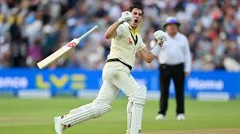

Pat Cummins
Role: Right-arm Fast Bowler
Bio: Pat Cummins is one of the leading fast bowlers in world cricket. Known for his pace, accuracy, and ability to bowl in all formats, Cummins has become a key figure for Australia. He became Test captain in 2021 and continues to be a leader both on and off the field.
Career Stats
| Format | Matches | Innings | Wickets | Best Bowling | Average | Economy | Strike Rate | 5-wicket Hauls | 10-wicket Hauls |
|---|---|---|---|---|---|---|---|---|---|
| Test | 53 | 102 | 217 | 6/23 | 21.55 | 2.74 | 47.1 | 7 | 0 |
| ODI | 85 | 85 | 133 | 5/70 | 27.43 | 5.18 | 31.7 | 1 | 0 |
| T20 | 55 | 55 | 60 | 3/15 | 23.4 | 7.22 | 19.4 | 0 | 0 |
Memorable Moments

Instrumental in Australia's Ashes victory, his remarkable spells cemented his place as a top Test bowler.
A key player in the IPL, known for his pace and ability to deliver crucial wickets under pressure.